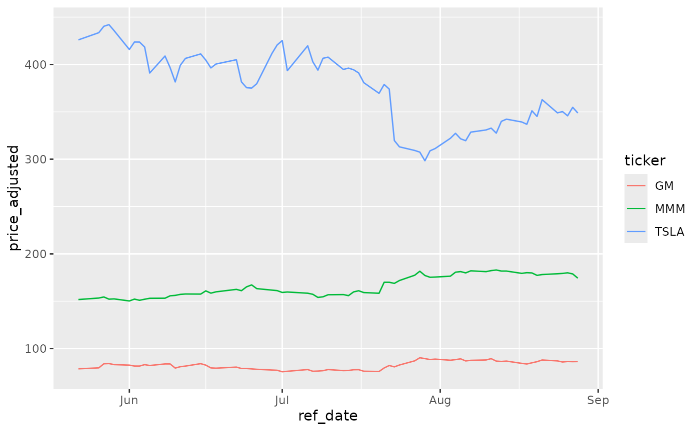
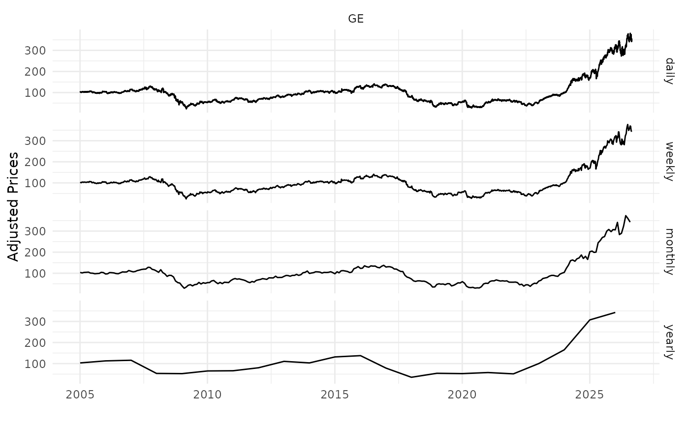

Examples
Here you’ll find a series of example of calls to
yf_get(). Most arguments are self-explanatory, but you can
find more details at the help files.
The steps of the algorithm are:
- check cache files for existing data
- if not in cache, fetch stock prices from YF and clean up the raw data
- write cache file if not available
- calculate all returns
- build diagnostics
- return the data to the user
Fetching a single stock price
library(yfR)
# set options for algorithm
my_ticker <- 'GM'
first_date <- Sys.Date() - 30
last_date <- Sys.Date()
# fetch data
df_yf <- yf_get(tickers = my_ticker,
first_date = first_date,
last_date = last_date)
# output is a tibble with data
head(df_yf)## # A tibble: 6 × 11
## ticker ref_date price_open price_high price_low price_close volume
## <chr> <date> <dbl> <dbl> <dbl> <dbl> <dbl>
## 1 GM 2026-07-31 88.8 89.1 87.0 88.9 6678000
## 2 GM 2026-08-03 89.5 90.3 87.3 87.7 4813400
## 3 GM 2026-08-04 87.4 88.6 86.0 88.3 5329800
## 4 GM 2026-08-05 88.5 90.0 88.3 89.2 6860200
## 5 GM 2026-08-06 89.2 89.3 86.5 86.9 5431300
## 6 GM 2026-08-07 86.9 87.9 86.3 87.6 4024000
## # ℹ 4 more variables: price_adjusted <dbl>, ret_adjusted_prices <dbl>,
## # ret_closing_prices <dbl>, cumret_adjusted_prices <dbl>Fetching many stock prices
library(yfR)
library(ggplot2)
my_ticker <- c('TSLA', 'GM', 'MMM')
first_date <- Sys.Date() - 100
last_date <- Sys.Date()
df_yf_multiple <- yf_get(tickers = my_ticker,
first_date = first_date,
last_date = last_date)
p <- ggplot(df_yf_multiple, aes(x = ref_date, y = price_adjusted,
color = ticker)) +
geom_line()
p
Fetching daily/weekly/monthly/yearly price data
library(yfR)
library(ggplot2)
library(dplyr)
my_ticker <- 'GE'
first_date <- '2005-01-01'
last_date <- Sys.Date()
df_dailly <- yf_get(tickers = my_ticker,
first_date, last_date,
freq_data = 'daily') %>%
mutate(freq = 'daily')
df_weekly <- yf_get(tickers = my_ticker,
first_date, last_date,
freq_data = 'weekly') %>%
mutate(freq = 'weekly')
df_monthly <- yf_get(tickers = my_ticker,
first_date, last_date,
freq_data = 'monthly') %>%
mutate(freq = 'monthly')
df_yearly <- yf_get(tickers = my_ticker,
first_date, last_date,
freq_data = 'yearly') %>%
mutate(freq = 'yearly')
# bind it all together for plotting
df_allfreq <- bind_rows(
list(df_dailly, df_weekly, df_monthly, df_yearly)
) %>%
mutate(freq = factor(freq,
levels = c('daily',
'weekly',
'monthly',
'yearly'))) # make sure the order in plot is right
p <- ggplot(df_allfreq, aes(x = ref_date, y = price_adjusted)) +
geom_line() +
facet_grid(freq ~ ticker) +
theme_minimal() +
labs(x = '', y = 'Adjusted Prices')
print(p)
Changing format to wide
library(yfR)
library(ggplot2)
my_ticker <- c('TSLA', 'GM', 'MMM')
first_date <- Sys.Date() - 100
last_date <- Sys.Date()
df_yf_multiple <- yf_get(tickers = my_ticker,
first_date = first_date,
last_date = last_date)
print(df_yf_multiple)## # A tibble: 204 × 11
## ticker ref_date price_open price_high price_low price_close volume
## * <chr> <date> <dbl> <dbl> <dbl> <dbl> <dbl>
## 1 GM 2026-05-22 78 79.8 77.7 78.8 6440900
## 2 GM 2026-05-26 79.3 80.2 78.7 79.8 5021700
## 3 GM 2026-05-27 80.7 84.5 80.7 84.1 10368600
## 4 GM 2026-05-28 83.6 85.2 83.4 84.3 7658000
## 5 GM 2026-05-29 84.8 85.0 81.2 83.2 15552600
## 6 GM 2026-06-01 83.4 83.4 80.4 82.7 7510600
## 7 GM 2026-06-02 82.9 84.2 81.0 81.7 10550800
## 8 GM 2026-06-03 80.7 84.1 80.3 81.7 9719500
## 9 GM 2026-06-04 82.1 83.6 81.6 83.2 6859300
## 10 GM 2026-06-05 82.0 83.1 81.4 82.1 7371600
## # ℹ 194 more rows
## # ℹ 4 more variables: price_adjusted <dbl>, ret_adjusted_prices <dbl>,
## # ret_closing_prices <dbl>, cumret_adjusted_prices <dbl>
l_wide <- yf_convert_to_wide(df_yf_multiple)
names(l_wide)## [1] "price_open" "price_high" "price_low"
## [4] "price_close" "volume" "price_adjusted"
## [7] "ret_adjusted_prices" "ret_closing_prices" "cumret_adjusted_prices"
prices_wide <- l_wide$price_adjusted
head(prices_wide)## # A tibble: 6 × 4
## ref_date GM MMM TSLA
## <date> <dbl> <dbl> <dbl>
## 1 2026-05-22 78.6 152. 426.
## 2 2026-05-26 79.6 153. 434.
## 3 2026-05-27 83.9 154. 440.
## 4 2026-05-28 84.2 152. 442.
## 5 2026-05-29 83.1 152. 436.
## 6 2026-06-01 82.5 150. 416.